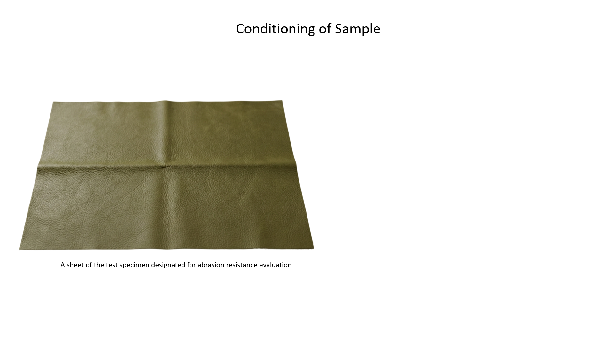
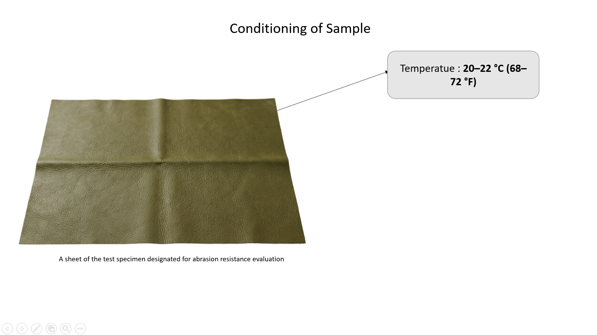
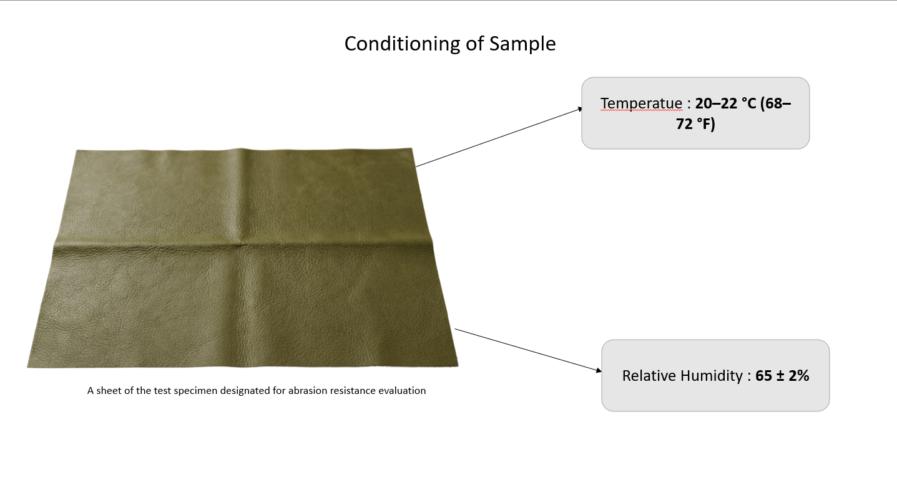

Step 5 Condition the test specimen at Temperature: 20–22 °C and Relative Humidity: 65 ± 2% before testing. A sheet of the leather swatch is designated for abrasion resistance evaluation. Click the slide to see conditioning parameters.


